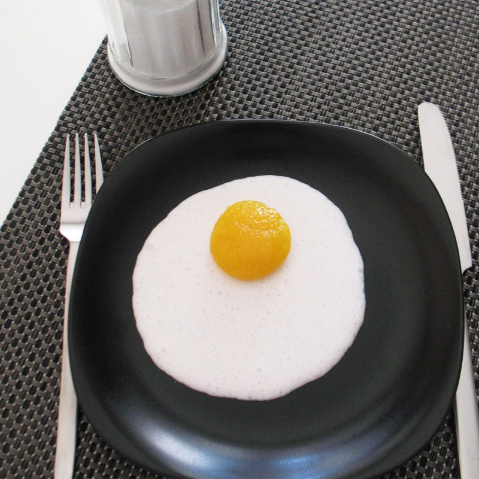

Oeuf au plat mangue-coco. 
 40min
40min- Difficulté :

- Technique(s) : Sphérification
Ingrédients
As
Alginate de sodium
Aa
Agar-agar
Gx
Gomme de xanthane
- 2g d'alginate de sodium
- 6g de lactate de calcium
- 2g de xanthane
- 200mL de nectar de mangue
- 2g d'agar-agar
- 250mL de lait de coco
- 1 cuillère à soupe de sucre
- 1 gousse de vanille

Préparation
Pour les « blancs » de coco :- Chauffer le lait de coco avec le sucre avec la gousse de vanille fendue.
- A ébullition, retirer la gousse puis disperser l'agar-agar. Au besoin, mixer s'il y a des grumeaux.
- Verser la préparation dans les assiettes pour former le «blanc» de gelée de coco.
- Laisser reposer 30 min au frais.
Pour les «jaunes » de mangue :
- Préparer le « bain de trempage » en versant 1 sachet de lactate de calcium dans 200 mL d'eau du robinet. Mélanger pour dissoudre complètement le sel.
- Mixer l'alginate et la xanthane aux 200 mL de nectar de mangue, au blender (ou mixer girafe) en veillant à ce que la poudre ne colle pas aux parois. Si besoin, laisser reposer 1h ou chauffer légèrement pour supprimer les bulles d'air.
- Remplir de cette préparation une grosse cuillère à dessert ou cuillère doseuse semi-sphérique et la plonger dans le bain de trempage. Renverser la cuillère pour déposer le « jaune d’œuf » au fond du bain. Faire de même avec le reste de la préparation.
- Laisser tremper 2 min, puis récupérer les œufs délicatement à l'aide d'une passoire ou cuillère percée. Les rincer à l'eau claire et les déposer sur les blancs de coco préalablement préparés. Vous pouvez réchauffer le tout quelques minutes au bain marie.